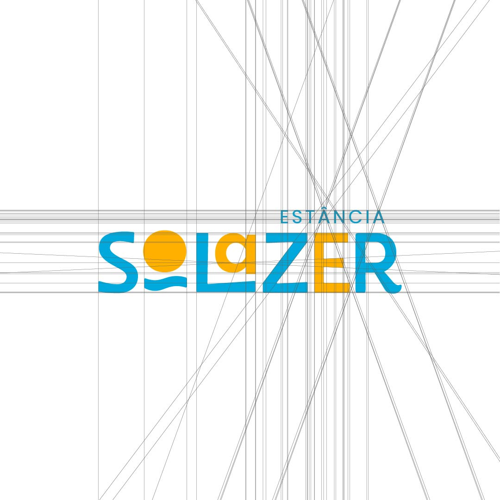

MARCA · 2024
Estância Solazer
Identidade visual para uma estância de lazer e descanso para toda a família.

Cliente
Estância Solazer
Setor
Lazer e turismo familiar
Entregas
Marca, sistema, sinalização, campanha
Ano
2024
Contexto
A Estância Solazer é um parque de lazer e descanso para a família toda, com piscinas, fazendinha, pesca e várias atrações. A marca precisava traduzir essa energia e a promessa de diversão de um jeito que falasse com pais e crianças ao mesmo tempo, alegre sem ser infantil demais, e fácil de aplicar em dezenas de peças e placas pelo parque. Criei a identidade inteira do zero, da marca à sinalização.
.jpg)
Conceito
Dentro de "Solazer" desenhei um sol nascendo sobre a água, escondido na palavra. O "O" vira o sol e as ondas aparecem logo abaixo. É um símbolo que entrega na hora o que o lugar oferece: sol, água e lazer.

O sistema
Montei um sistema generoso, feito pra aguentar muita aplicação sem perder a energia nem a coerência.
Marca


Paleta
Quatro cores vibrantes que dão o tom festivo e combinam entre si em qualquer ordem.
Tipografia
Fredoka nos títulos e destaques, pelo jeito redondo e divertido. Poppins nos textos, pela leitura limpa.
Aa Bb Cc
Fredoka · 500 600 700
O lugar ideal para quem procura muito lazer e diversão.
Poppins · 400 500
Pattern de confete
Três variações em azul e amarelo, da chuva de traços curtos ao desenho mais orgânico. Carregam a sensação de festa e movimento por todas as peças.


.png)

Sistema de sinalização
Da rodovia ao detalhe, todas as placas falam a mesma língua.
Anúncio de chegada, indicativa de entrada, totens informativos e avisos de uso. Cada peça tem a mesma anatomia: faixa de gradiente quente, fundo azul, marca dentro da pílula branca.


Banner de poste
Digital

Brinde
Um pedacinho do parque pra levar embora.
Uma marca que parece o lugar: sol, água e gente feliz.
Do símbolo escondido no nome às placas que apontam o caminho, tudo convida a aproveitar.
Próximo case
Aliança Metalúrgica →